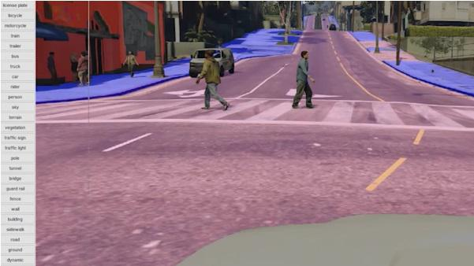

GTA V leert A.I om auto's veilig te laten rijden.
Dankzij moderne gaming is het nu mogelijk om deze nagemaakte werelden in het voordeel van de mensen te gebruiken. Wat blijkt nu, GTA V leert A.I. zelfsturende auto's veilig de weg op te gaan.
GTA V ken je het best van ontploffingen, schietpartijen, racen en overvallen plegen, maar nu kan de mensheid toch echt toepasbare functie uit de game halen.
Verschillende onderzoeken maken momenteel gebruik van het best verkochte Rockstar-spel aller tijden om algoritmes te berekenen en deze te gebruiken voor zelfrijdende auto's. Zo zijn momenteel Intel Labs en de UT Darmstadt bezig met een onderzoek die de game als leertool gebruiken om machinaal te leren.
GTA V leert A.I. om objecten en mensen te herkennen
Het is niet de eerste keer dat games worden gebruikt om algoritmes te genereren en die te gebruiken voor A.I. Maar voor het eerste wordt er een game gebruikt die niet specifiek is ontwikkeld voor dit doeleinde.
De realisme van het spel wordt gebruikt om de voorwerpen in het echt te herkennen. Omdat de auto's, bomen, mensen, stoepranden en meer in GTA V zo gedetailleerd zijn, kan de computer deze prima gebruiken. Hierdoor is het mogelijk om machinaal te leren en de algoritmes te perfectioneren.
De onderzoekers hebben een software gecreëerd, die zich bevindt tussen de game en de hardware. Alles in het zichtveld van de auto wordt geanalyseerd zoals te zien is in de afbeelding. GTA V leert A.I. op deze manier om veiliger te rijden in het verkeer.
